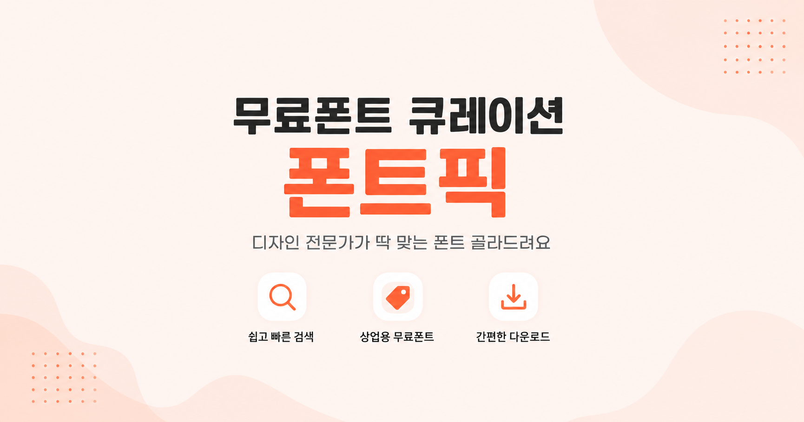
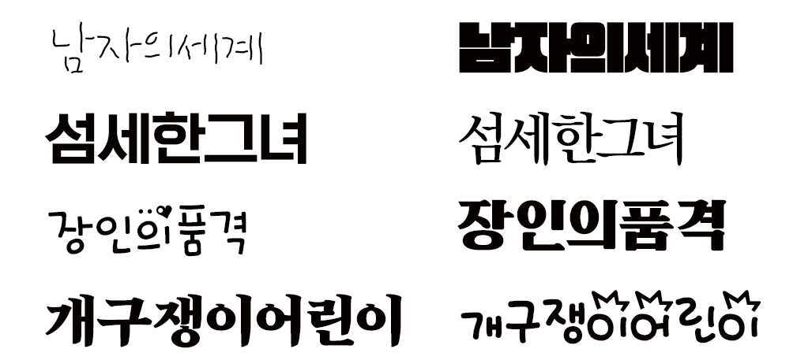

포스터, 썸네일, 블로그, SNS 이미지, 프레젠테이션, 유튜브 영상, 웹사이트까지... 우리는 생각보다 훨씬 많은 곳에서 폰트를 사용합니다. 하지만 많은 사람들이 폰트를 선택할 때 가장 먼저 보는 것은 "예쁜가?"입니다.
물론 디자인도 중요합니다. 하지만 좋은 폰트는 단순히 예쁜 폰트가 아니라 목적에 맞는 폰트입니다. 같은 문장이라도 어떤 폰트를 사용하느냐에 따라 신뢰감이 생기기도 하고, 감성이 전달되기도 하며, 중요한 정보가 더 눈에 잘 들어오기도 합니다.
아래 그림에서 폰트 선택의 중요성을 확인할 수 있습니다.

1가장 먼저 선택해야 하는 폰트, 고딕체
고딕체는 가장 범용적으로 사용할 수 있는 폰트입니다. 획의 굵기가 일정하고 장식이 거의 없어 깔끔하며, 작은 크기에서도 읽기 쉽습니다. 그래서 대부분의 디자인 작업은 고딕체 하나만 잘 선택해도 완성도가 크게 높아집니다.
고딕체가 잘 어울리는 디자인
- 웹사이트
- 앱 UI
- 블로그
- 카드뉴스
- 프레젠테이션(PPT)
- 유튜브 자막
- 썸네일
- 안내문
- 배너
고딕체는 정보를 명확하게 전달해야 하는 디자인에서 가장 뛰어난 성능을 보여줍니다.
2감성을 표현하고 싶다면 바탕체(명조체)
바탕체는 글자의 끝에 작은 장식이 있는 세리프(Serif) 계열 폰트입니다. 고딕체보다 부드럽고 차분한 분위기를 만들어 주기 때문에 감성적인 디자인에 많이 사용됩니다. 특히 긴 글을 읽는 콘텐츠에서는 눈의 피로를 줄여주는 장점도 있습니다.
바탕체가 잘 어울리는 디자인
- 브랜딩
- 책 표지
- 포스터
- 브로슈어
- 에세이
- 블로그 대표 이미지
- 감성 카드뉴스
3손글씨체와 장식체는 '포인트'로 활용하세요
손글씨체와 장식체는 개성이 강한 폰트입니다. 귀엽고 따뜻한 느낌, 빈티지한 분위기, 강렬한 인상 등 다른 폰트가 표현하기 어려운 감성을 전달할 수 있습니다. 하지만 개성이 강한 만큼 너무 많이 사용하면 디자인이 복잡해지고 가독성이 떨어질 수 있습니다. 그래서 제목이나 강조 문구처럼 시선을 끌고 싶은 부분에 사용하는 것이 가장 효과적입니다.
활용하기 좋은 곳
- 포스터 제목
- 유튜브 썸네일
- 이벤트 배너
- 광고 이미지
- 로고
- 브랜드 슬로건
본문 전체를 손글씨체로 작성하기보다는, 핵심 문구만 강조하는 용도로 사용하는 것을 추천합니다.
4디자인에서 가장 중요한 것은 '가독성'
폰트를 고를 때 가장 먼저 고려해야 할 것은 디자인보다 가독성입니다. 아무리 예쁜 폰트라도 읽기 어렵다면 전달력이 떨어지고, 결국 좋은 디자인이라고 보기 어렵습니다. 좋은 디자인은 시선을 끄는 것에서 끝나는 것이 아니라, 필요한 정보를 쉽고 빠르게 전달하는 것까지 포함합니다.
5초보자를 위한 가장 쉬운 폰트 선택법
폰트를 고를 때 고민된다면 다음 원칙을 기억해 보세요.
- 정보를 전달하는 디자인 → 고딕체
- 감성을 표현하는 디자인 → 바탕체
- 시선을 끌어야 하는 부분 → 손글씨체 또는 장식체
이 세 가지 원칙만 기억해도 대부분의 디자인에서 실패할 가능성을 크게 줄일 수 있습니다.
6폰트픽에서 목적에 맞는 무료 폰트를 찾아보세요
무료 한글 폰트는 정말 다양하지만, 종류가 많을수록 어떤 폰트를 선택해야 할지 오히려 고민이 커질 수 있습니다.
폰트픽은 실제 디자인 작업에서 활용도가 높은 무료 한글 폰트를 엄선하여 소개하는 큐레이션 사이트입니다. 고딕체, 바탕체, 손글씨체 등 폰트의 특징과 활용 목적을 쉽게 비교할 수 있어, 디자이너뿐 아니라 블로거, 콘텐츠 제작자, 학생, 직장인까지 누구나 자신에게 맞는 폰트를 빠르게 찾을 수 있습니다.
좋은 디자인은 화려한 효과보다 적절한 폰트 선택에서 시작됩니다. 다음 디자인 작업에서는 색상보다 먼저, 폰트를 선택해 보세요.
📌 폰트픽 즐겨찾기
좋은 폰트, 딱 맞는 폰트를 쉽고 빠르게 찾기를 원하시면 즐겨찾기에 추가해주세요!
Windows Ctrl + D · Mac ⌘ + D
즐겨찾기에 추가하면 언제든 추천 폰트를 찾을 수 있습니다.
폰트픽 둘러보기